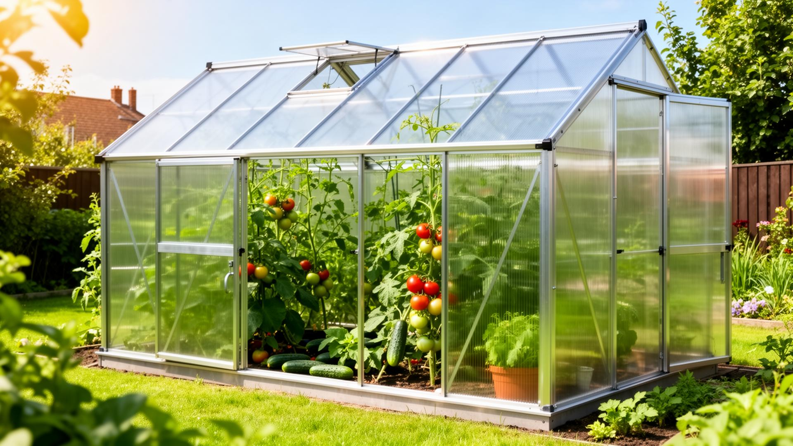

Почему именно 3×6 м
Для большинства дачных участков теплица 3×6 м считается золотой серединой. Внутри удобно разместить несколько грядок, пройти по центру, организовать проветривание и при этом не занять половину двора.
Но сам размер не решает всё. При покупке важно смотреть на жёсткость каркаса, профиль, толщину поликарбоната и условия установки. Если выбирать только по цене, через пару сезонов можно столкнуться с перекосами и быстрым износом покрытия.
С чего начинать выбор
Сначала стоит определить сценарий использования. Если теплица нужна для сезонной дачи и нормальной аккуратной эксплуатации, достаточно базовой модели. Если нужен больший запас прочности, лучше смотреть на усиленный профиль. На сайте уже есть готовые варианты в каталоге теплиц.
Эконом
Модель Эконом за 16 900 ₽ подходит тем, кто ищет недорогую теплицу 3×6. Профиль 20×20 — рабочий вариант для стандартной дачной нагрузки.
Стандарт
Модель Стандарт за 18 900 ₽ выполняется из профиля 25×25. Это более универсальный вариант, если хочется получить более жёсткий каркас.
Люкс
Модель Люкс за 27 500 ₽ с двойным профилем 25×25 рассчитана на более серьёзную эксплуатацию и запас по прочности.
Как выбрать толщину поликарбоната
Для стандартных дачных задач чаще выбирают поликарбонат 4 мм, а для более прочной и долговечной конструкции берут 6 мм. Подробное сравнение есть в статье о выборе поликарбоната 4 мм и 6 мм.
- 4 мм за 2 900 ₽ подходит для сезонного выращивания и обычной эксплуатации.
- 6 мм за 4 700 ₽ чаще выбирают для усиленных теплиц и лучшего запаса по прочности.
На что ещё смотреть перед заказом
- Насколько ровный и подготовленный участок под монтаж.
- Нужна ли установка без фундамента или с дополнительной подготовкой основания.
- Какие культуры вы планируете выращивать и нужен ли больший внутренний объём.
- Важен ли запас по снеговой нагрузке на зиму.
Если хотите заранее понять, какой профиль лучше именно под ваш участок, стоит дополнительно посмотреть статью 20×20 или 25×25: какой каркас выбрать.
Итог
Выбор теплицы из поликарбоната 3×6 стоит строить не только вокруг стартовой цены. Намного важнее понять, какая жёсткость каркаса нужна для участка, какой запас по покрытию вы хотите получить и насколько важна долговечность конструкции.